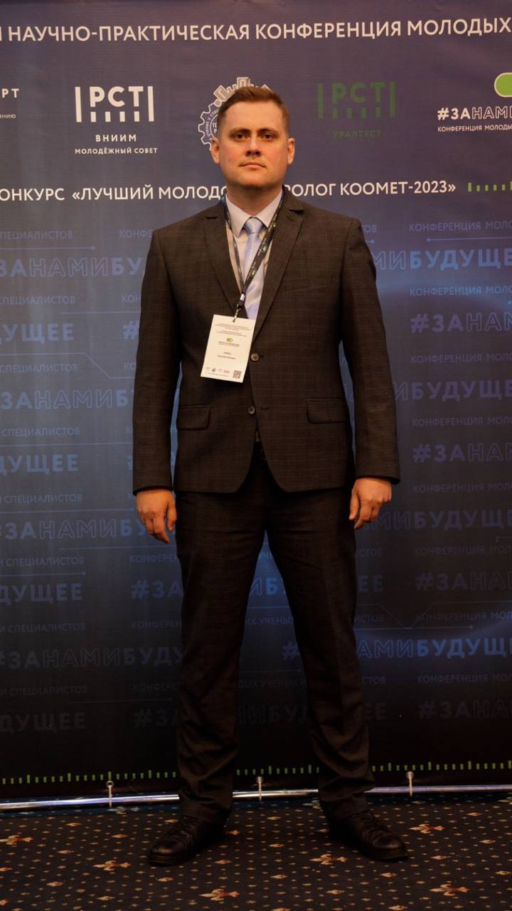

Образование
В 2014 году окончил БНТУ ФИТР по специальности инженер по автоматизации технологических процессов и производств в энергетике.
В 2018 году прошел повышение квалификации в «КНИТУ» по дополнительной профессиональной программе «Коммерческий учет газа».
В 2021 году прошел повышение квалификации в «АСМС» по дополнительной профессиональной программе «Поверка и калибровка средств измерений давления, температуры и расхода».
Опыт работы
Работаю в ОАО «Газпром трансгаз Беларусь» с 17.02.2014:
в филиале Минское УМГ в должностях: слесарь КИПиА и инженер по учету газа с сентября 2014г. по январь 2020г;
в администрации с января 2020 г. в должности инженера I категории производственного отдела метрологического обеспечения.
Навыки
Осуществляю координацию и методическое руководство работой специалистов и должностных лиц филиалов Общества ответственных за метрологическое обеспечение и измерение количества газа .
Личные качества: ответственность, командная работа, коммуникабельность.